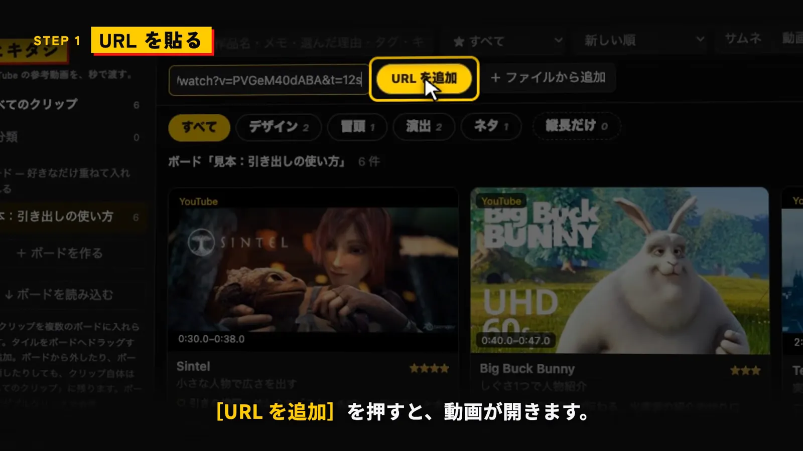

操作マニュアル動画の制作サービス
SaaS・業務ソフトの『使い方』を、完成品の動画マニュアルで届けます。

- 1
手順の見出しいま何をしているかが一目で分かる
- 2
押す所を囲む迷いやすいボタンに寄って強調
- 3
字幕は1行ずつ音を出せない職場でも読める
AIナレーション台本どおりの声。直しもすぐ
どの動画も、同じ型で作ります。
見る人が2本目から迷わないように、画面の作りと音をそろえています。
- 画面の構成を固定手順の見出し・操作の画面・字幕の位置は、毎回同じ場所に置きます。
- 字幕は1行ずつ焼き込み動画の中に字幕を入れるので、どの再生環境でも同じに見えます。
- 音の大きさをそろえるナレーションの音の大きさを、どの動画でも同じにそろえます。続けて見ても、音量を変えずに済みます。
- 1本は3分まで3分を超える手順は、2本に分けて作ります。
こんなこと、ありませんか。
ヘルプ記事はあるのに、
同じ問い合わせが減らない
アップデートのたびに、
マニュアルが古くなる
動画を作る人がいない・
時間がない
操作の動画を、完成品で納めます。
ツールの導入も、作り方の勉強も要りません。
作り方は、5つの順番です。
公開ヘルプの分析公開されているヘルプ記事を読み、動画にする手順を決めます。
台本画面の操作と、ナレーションの文を書きます。
画面録画実際の画面を録画します。
編集押す所の強調と、字幕を入れます。
納品MP4・字幕ファイル・台本テキストでお渡しします。
作例
自社製品「ヒキダシ」の使い方動画です。ドウセツと同じ型で作りました。ほかの会社の画面は、その会社の承諾がないと作例にできないため、今は自社製品だけを載せています。
作例の画面に映る映像：Sintel・Big Buck Bunny ほか © Blender Foundation（CC BY）
料金
ドウセツの金額は、すべて税込です。
| サービス | 公開されている価格 | 条件 |
|---|---|---|
| ウェブデモ 動画マニュアル制作 | 1本 88,000円〜（税込） ＋初期設定 55,000円（税込） 公式の表示は 80,000円〜＋50,000円（税別） | 音声付きで200秒まで |
| Jストリーム 動画マニュアル制作パック | 5本 550,000円 （1本あたり 110,000円） | 端末画面撮影プラン。1本2分以内・5本同時制作。公式ページに税込・税別の表記がないため、表示のまま載せています |
| ドウセツ 10本パック | 先着3社：10本 275,000円（税込） （1本あたり 27,500円） 4社目からは 550,000円（1本あたり 55,000円） | 1本3分まで。初期費用なし |
10本パック
ヘルプの「よく聞かれる手順」を、まとめて動画にするとき
立ち上げの時期のため、最初の3社に限った価格です。3社のお申し込みが埋まった時点で、4社目からの価格でのご案内になります。
残り3社（2026年11月25日時点）
- 3分版：1本3分まで
- 5分版：1本5分まで＋手順書テキストの整形つき
お試し 3本
まず効き目を確かめたいとき
99,000円10万円未満で試せます
- 1本3分まで・AIナレーション＋字幕
- 修正2回まで・初稿3営業日
- 納品から30日後に、振り返りのレポートをお送りします（再生された回数と、問い合わせ件数の前後。減る件数を約束するものではありません）
- 次にまとめてご依頼いただくとき、お試しの代金を全額差し引きます
月ぎめ
アップデートに合わせて、動画を毎月入れ替えたいとき
新規 月4本＋差し替え 月2本まで
新規 月4本＋差し替え 月4本まで＋四半期ごとの棚卸しレポート3か月に1回、納めた動画を今の画面と見比べ、直す物と次に作る物をお知らせします
差し替え：同じ手順の画面や文言が変わったときは「差し替え」、手順そのものが変わったときは「新規」として数えます。3分を超える手順は2本分です。
軽微＝字幕・言葉・ボタンの名前だけ直す（録り直しなし）／標準＝一部の画面を録り直す／大幅＝半分以上を録り直す。どれに当たるかは、お見積もりのときにお伝えし、OK をいただいてから作ります。
ツールを入れて社内で作るのと、何が違うか。
| 項目 | ツールを入れて 社内で作る | ドウセツに頼む |
|---|---|---|
| 始めるのにかかる費用 | 月額 98,780円〜（税込）、12か月分を一括払い、初期費用は別公式の表示は 89,800円〜（税別）例：Teachme Biz エントリープランの公開価格（2026年11月24日確認） | お試し3本 99,000円から初期費用なし |
| 作る人 | 社内の担当者が、録画・編集・ナレーションまで | 私たちが作り、完成品を納めます |
| 覚えること | ツールの使い方と、動画の作り方 | ありません |
| 画面が変わったとき | 担当者が作り直す | 差し替え 1本 9,800円から |
お願いする前に、気になること。
- 録画と公開は、ご承諾のあとで御社の利用規約に沿って、ご承諾をいただいてから進めます。
- 初稿は3営業日修正は2回までです。
- 差し替えの値段と日数を、先に出しています軽微 9,800円（3営業日）／ 標準 19,800円（5営業日）／ 大幅 39,800円〜（10営業日）
- お試しだけで終わっても大丈夫です代金の全額差し引きは、次にまとめてご依頼いただくときだけです。
よくある質問
できあがった動画の権利は、どうなりますか？
納品のあと、自社で編集できますか？
本数が増えたら、1本あたりの値段は下がりますか？
プランの変更や解約はできますか？
画面はどうやって渡せばいいですか？ セキュリティは？
テスト用のアカウントか、ダミーのデータを入れた画面をご用意ください。本物の個人情報は映しません。ご希望があれば、作業の前に秘密保持契約（NDA）を結びます。
テスト用アカウントの ID・パスワードは、メール本文では受け取りません。パスワード管理ツールの共有など、暗号化された方法でお預けください。お預かりした認証情報は暗号化して保管し、納品が終わった時点でこちらの記録から消して、メールでお知らせします。
録画・編集・声づくりは、手元のパソコンで行います。作業するパソコンはディスクを暗号化しています。台本づくりと仕上がりの確認では、AI（Claude）が、テスト用アカウントの画面を読みます。AI を使わない制作は行っていません。読み込ませるのは、テスト用アカウントかダミーのデータを入れた画面だけです。
お預かりした素材は手元のパソコンに保管し、外部のクラウドには置きません。削除をご希望の場合は、お申し出いただければ対応し、対応したことをメールでお知らせします。テスト用のアカウントは、納品のあとに止めていただけます。
お試しの振り返りでは、何を見ますか？
納めるとき、3本それぞれに専用のリンクをお付けします。ヘルプ記事や、問い合わせへの返信に貼ってお使いください。動画が開かれた回数と再生された回数は、こちらで自動で数えます。
お願いする数字は1つだけです。その3つの手順についての問い合わせ件数を、納品の前30日と後30日で教えてください。出せない場合は、再生された回数だけでまとめます。
納品から30日後に、1枚のレポートにしてお送りします。問い合わせが減ることは約束しません。ヘルプページに動画を直接埋め込んだ場合、その分の回数は数えられません。
棚卸しレポートには、何が書いてありますか？
月ぎめ 132,000円の案に付く、3か月に1回のレポートです。
納めた動画をすべて、御社の今の画面と見比べて、1本ずつ「そのままで大丈夫」「差し替えた方がいい」「作り直した方がいい」に分けます。どの画面が変わったかも書きます。あわせて、動画ごとの再生された回数と、次に動画にすると効きそうなヘルプ記事を3つお知らせします。
画面が変わったら、どう進みますか？
新しい版を出す予定が決まったら、出す前に一言お知らせください。月ぎめ 132,000円の案では、こちらも3か月ごとに画面を見比べます。
ご連絡をいただいたら、軽微・標準・大幅のどれに当たるかと、値段をお伝えします。OK をいただいてから作り、軽微は3営業日、標準は5営業日、大幅は10営業日でお納めします。手順そのものが変わったときは、新規として作ります。
公開前の画面（テスト用の環境）で録画できれば、新しい版を出す日に合わせて差し替えられます。
だれが対応しますか？
まずは、どこからでも。
お試し3本について相談する
動画にしたい手順が決まっていなくても大丈夫です。資料と同じフォームで「相談もしたい」を選んでください。送っていただいたあと、メールで日程をご相談します。
相談する